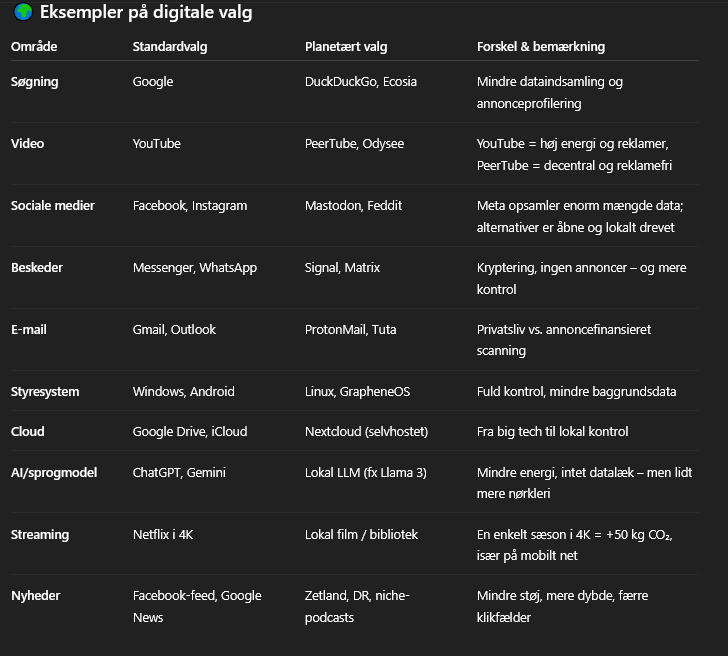

Hvordan ser hverdagen ud, når man sætter sig for at leve under Jordens tålegrænser?
For os handler det ikke om at være perfekte – men om at være bevidste.
Vi træffer valg i vores hverdag, der reducerer vores økologiske fodaftryk og styrker vores fællesskab.
Mad og forbrug 🌿
Vi spiser mest plantebaseret og bruger “mad-spild” fra lokale netværk og indkøb – som Too Good To Go, WeFood og madspildskøleskabe.
Vi handler helst lokalt og dyrker lidt selv.
Planlægger ud fra dét, vi har – ikke hvad vi har lyst til lige nu.
Det er ikke perfekt. Men vi prøver – og det gør en forskel.
Og lidt efter lidt føles det faktisk ret godt.
For os handler det om at vælge ressourcer med lavt klimaaftryk og høj mening. Det betyder:
🌱 Vi forsøger at spise flest planter – og hvis vi bruger animalske produkter, er det kun fra madspild.
🥕 Vi bruger hele råvaren og tænker i rester, før vi tænker i opskrifter.
🛒 Vi handler i WeFood, gårdbutikker, Too Good To Go og madspildsnetværk.
🌍 Vi vælger Fairtrade og økologi, når det giver mening – og holder øje med transport og CO₂-aftryk (ja, det kræver lidt nørderi indimellem).
🔁 Vi undgår engangsemballage og planlægger maden ud fra det, vi allerede har.
✨ Og her er vores tre vigtigste leveregler:
1) Brug madspild – det er CO₂-nulsum
2) Brug hele varen
3) Overvej, hvor langt det har rejst
🥕 Mandag – hverdag med struktur Morgenmad: Havregrød med gulerødder fra selvpluk, toppet med hjemmelavet æblemos af overskudsæbler fra WeFood.
Madpakker: Rugbrød (fra WeFood) med hummus af kikærter – og lidt grøntsagsrester fra søndagens fad.
🍽 Aftensmad: Pita med kylling (fra naboens madspild), æg fra egne høns og friske grøntsager fra den lokale øko-gård. Brødene er hjemmebagte med rug- og havremel (også fra WeFood).
Snacks: Æbleskiver fra fryseren (sidste julerest) med marmelade fra “Tina’s Køkken”, der forvandler overskud til forkælelse.
Nyt indkøb: Ærter, tomater, agurk og marmelade fra den lokale gård. Madspildsindkøb: Æbler, rugbrød, kikærter og mel. 💰 Ca. dagspris for 2 voksne og 2 børn: 30–40 kr.
🍫 Lørdag – hyggestund med struktur Morgenmad: Surdejsboller (langtidshævet og bagt med madspildsmel) med hjemmelavet smør af havregrøds- og kartoffelrester. Dertil syltetøj fra Tina’s Køkken og kaffe brygget på bønner fra Ønsk.
Formiddagssnack: Bananbrød af overmodne bananer fra madspildsgruppen og lidt chokolade fra en glemt fødselsdagsgave.
Frokost: “Tøm køleskabet”-tallerken – rester fra ugen, hummus, kogte kartofler, syltede rødbeder og brødrester.
Aftensmad: Fredagspizza med hjemmelavet dej (surdej + madspildsmel), toppet med tomatsauce fra tirsdag, grøntsager fra gården og ost fra en “Too Good To Go”-kasse.
Snacks: Popcorn, hjemmelavet frugtlæder og lidt fredagsslik – ungerne har valgt en pose Katjes og drømmer om hjemmelavet is på bananrester.
Nyt indkøb: En pose Katjes og et par ekstra grøntsager til pizza. Madspild: Mel, bananer, tomatsauce, chokolade og slik. 💰 Ca. dagspris for 2 voksne og 2 børn:35–45 kr.
🔥 Når alting ikke spiller Morgenmad: Kold havregrød direkte fra gryden. Børnene nægtede. Den ene krævede cornflakes (uden mælk), den anden gik med knækbrød og Nutella – som har stået siden jul.
Madpakker: Det blev til rugbrød med rest-hummus, en halv gulerod og en kikset banan. Intet taget op af fryseren – men heldigvis havde vi to smoothies fra WeFood (shhh, de havde Rema-label).
🍽 Aftensmad: Vi gav op og bestilte pizza. Ikke planetarisk perfekt – men nødvendigt. Veggie med ekstra ost til de voksne, Hawaii uden skinke til den ene og pomfritter til den anden.
Snacks: Chokoladekiks og kakao fra gemmerne. Og ja… der røg en impulspose med hjem fra Brugsen, selvom vi havde aftalt “ingen nyt”.
Nyt indkøb: Pizza og impulsslik. Madspild: Ikke meget – vi fik spist det meste. Men stemningen var... lad os sige: knap så bæredygtig. 💰 Dagspris: 400–500 kr. – og lidt moralsk overtræk.
Transport og rejser 🚲
Vi har ingen bil – men vi har tid, rytme og en god el-ladcykel.
De fleste hverdagsrejser foregår på cykel eller med tog.
Vi planlægger lidt mere, men slipper til gengæld for brændstof, reparationer og parkering.
Vi vælger transportform efter klimaaftryk og mening.
Det betyder: Gå, cykle, del – og tog, når det skal gå stærkere.
Vi forsøger at gøre det hele til en del af oplevelsen, ikke bare transporttid.
🚲 Mandag: Aflevering og hentning med ladcyklen. Arbejdet tilbyder både bil, cykel og offentlig transport – men i dag blev det en kombi af cykel og bus.
🚆 Torsdag: Cykel med børnene om morgenen, tog til Sønderjylland for at hente delebarn. Med bærerygsæk og kiks i tasken gik det (næsten) som smurt.
🚌 Lørdag: Hyggetur til farmor med bus begge veje. Lavt aftryk, høj kvalitetstid – og et bål i haven som prikken over i’et.
💡 Ugepris for transport: ca. 300 kr. for hele familien – inkl. pendling, tog og bus.
🚲 Påske: Hærvejen på cykel
Vi pakkede ladcyklen og drog afsted langs Hærvejen.
Med telt, trangia og tålmodighed cyklede vi fra Vejle til Viborg over 7 dage.
Ungerne elskede det. Regn, bål og grusveje – men også smil, historier og ro.
🚉 Sommer: DSB Rundt
Vi købte “Rejsepas” og tog på eventyr i Danmark med tog og bus.
Overnattede hos venner, i shelters og et enkelt billigt hotel.
Vi fik set store dele af Jylland – uden bil og uden stress.
Vores ferier er enkle, men fulde af minder. Det vigtigste?
At være sammen – ikke hvor langt vi kommer.
Energi og hjem 🏡
Vi bor småt, isoleret og med lavt energiforbrug. Vores hjem er 80 m², godt fordelt og fyldt med kærlighed – ikke ting. Vi har fundet en energibesparende vaskemaskine, hvor vi genbruger vandet, tørrer tøj uden tørretumbler, og bruger primært dagslys i dagtimerne.
Vi sparer på varmen, har udskiftet gamle el-apparater, og vælger grøn strøm fra et energiselskab vi selv har købt andel i. Når noget går i stykker, reparerer vi – og når noget mangler, leder vi først i genbrug og byttenetværk.
Vi forsøger at tænke i kredsløb og funktion, ikke i forbrug. Et hjem er ikke et showroom – det er en base for liv og hverdagsmagi.
🌡️ Vi har skruet ned for varmen og justeret garderoben i stedet – vi bruger i gennemsnit 30 m³/måned på varme, ca. 20% af det danske gennemsnit.
⚡ Vi bruger grøn strøm, vælger energieffektive apparater og har valgt et elselskab med andelsstruktur.
Vores gennemsnit: 130 kWh/måned – ca. 40% af gennemsnittet.
💧 Vi opsamler regnvand og bruger vand med omtanke – ca. 2 m³/måned, svarende til 15% af gennemsnittet.
🪵 Vi genbruger materialer til renovering – fx træ fra DBA, byggeaffald eller naboer.
Det sparer ofte 500–1000 kg CO₂ pr. projekt.
🔧 Vi reparerer, låner og bytter i stedet for at købe nyt.
En genbrugt elkedel, vinterjakke eller cykel sparer let 20–100 kg CO₂.
🧼 Vores rengøringsmidler er hjemmelavede – eddike, sæbespåner og citron.
Det reducerer både kemi og emballage og sparer os 300–500 kr. årligt.
🍎 Vi komposterer alt organisk affald – inkl. pap og grønt.
Hønsene tager sig af madresterne, og restaffaldet er nede på én pose om ugen.
🏡 Vi bor på 79 m² – under halvdelen af det danske gennemsnit.
Vi deler uderum og redskaber med naboerne. Det giver både nærvær og lavere klimaaftryk.
Digitale valg 📱
Vi bruger open source, deler viden og vælger fri software.
Ingen annoncer, minimal overvågning og maksimal selvstændighed.
Internettet er også et økosystem.
💻 Vi bruger open source og fri software så vidt muligt – f.eks. Linux, GrapheneOS og open source-apps.
💗 Vi har sluppet de store amerikanske techgiganter og bruger i stedet mindre, europæiske og danske tjenester – som Mastodon og Feddit.
🔐 Vores e-mail og cloud ligger hos privacy-venlige alternativer som Proton og Tuta. Vi betaler selv for det, vi bruger – og ved, hvad vi får.
🧠 Vi har eksperimenteret med egne AI-løsninger (LLM’er), lokal hosting og små servere – for at lære og tage ansvar for egne data.
🔍 Vi opsøger aktivt uafhængige nyhedskilder og prøver at bryde ud af informationsboblerne.
🫶 Vi prioriterer menneskelig kontakt og fysisk nærvær over digitale “løsninger” – og tager jævnligt pauser fra skærme og sociale medier.

Tabellen sammenligner vores forbrug med det planetære ideal og det danske gennemsnit – opdelt på de vigtigste områder i hverdagen.
Fællesskab og åbenhed 🤝
Vi er en del af et spirende fællesskab med naboer, venner og familie. Vi hjælper, deler og udvikler os sammen. Ingen kan leve planetært alene – vi gør det sammen.
Det handler ikke om at opgive alt. Det handler om at finde en ny balance.